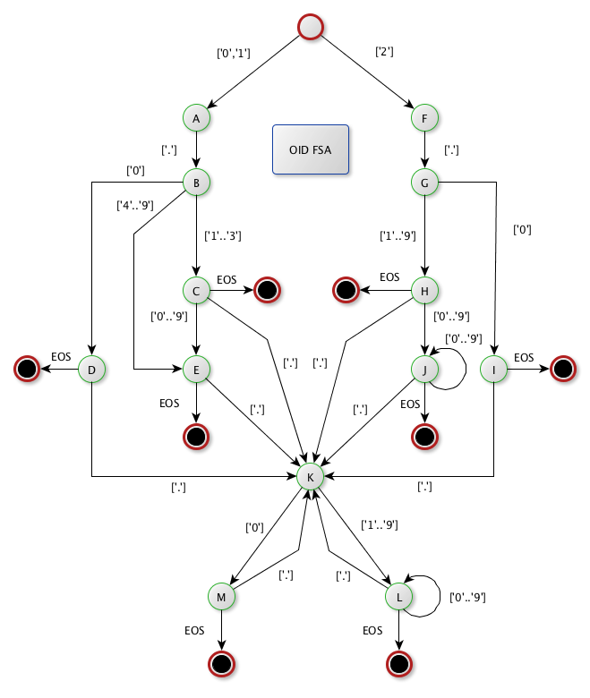

LDAP API
Downloads
Getting Started
Documentation
- Five minute tutorial
- User Guide
- API 1 to 2 migration
- JavaDocs 2
- JavaDocs
- Cross-Reference 2
- Cross-Reference
- Developer Guide
- Internal Guide
Support
Community
About Apache
6.27 - Oid
Introduction
An OID stands for Object IDentifier. It’s part of the ASN/1 standard. Basically, it’s a hierarchy, named a ‘registration tree’. It’s a list of ‘arcs’, which values start at ‘0’, and each arc is separated with a dot ( ‘.’ ).
There are three defined root arcs :
* itu-t (0)
* iso (1)
* joint-iso-itu-t (2)
There are some places on the internet where one can look at the existing OIDs. Here is one: OID repository.
Syntax
The OID syntax is pretty simple. Numbers are separated with periods between them, e.g. 0.1.245
There are a few extra rules:
* The first number must be 0, 1 or 2
* If it's 0 or 1, then the second number must be between 0 and 39
* A period must be preceded and followed by a number
* A 0 at first position is never followed by another digit
* There is no limit for the number of digits. For example, 2.25.81407072025111374527560065493494091452, is a legitimate OID value.
API
The Apache LDAP API offers a few functions that can be used to manipulate an OID. In any case, there is not a constructor for an OID.
The class to use is org.apache.directory.api.asn1.util.Oid. It creates immutable instances.
static Oid fromBytes( byte[] )
Returns an Oid instance constructed using a byte[] representing an encoded OID.
static Oid fromString( String )
Returns an Oid instance constructed from a String representing an OID.
static boolean isOid( String )
Tells if a String is a valid OID.
String toString()
Return the String representation of an Oid instance.
byte[] toBytes()
Return the byte[] representation of an Oid instance.
OID parsing
We use a FSA (Finite State Automaton) to parse a String to get an internal representation of an OID. Here is a picture showing the FSA we are using:
